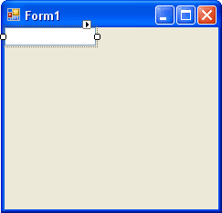
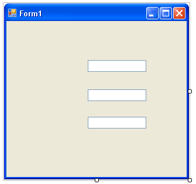
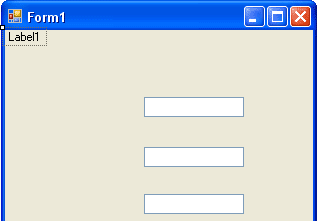
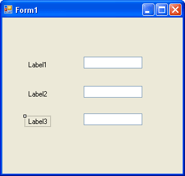
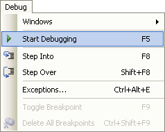
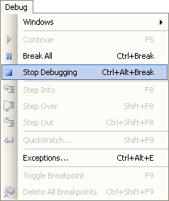

Adding a Tool (Control) to your Form
Let's start by adding a textbox to our form. (The following screenshots are taken from the more colourful previous versions of Visual Studio Express. Version 2012 is rather grey and bland. So don't worry that you forms don't look exactly the same, if you have this version.)
With the Common Controls displayed, do the following:
-
Locate the TextBox tool
-
Double click the icon
-
A textbox is added to your form
The textbox gets added to the top left position of your form. To move it down, hold your mouse over the textbox and drag to a new position:

Notice the small squares around the textbox. These are sizing handles. Move your mouse over one of them. The mouse pointer turns into an extended line with arrowheads. Hold your left mouse button down and drag outwards. The textbox is resized. Play around with the sizing handles until you're happy with the size of your textbox.
One thing you will notice is that you can't make the size any higher, but you can make it wider. The reason why you can't make it any higher is because the default action of a textbox is to have it contain only a single line of text. If it's only going to contain one line of text, Microsoft reasoned, there's no reason why you should be able to change its height. A textbox can only be made higher if it's set to contain multiple lines of text. You'll see how to do this soon.
-
Create two more textboxes by double clicking on the textbox icon in the toolbar (Or Right-click on the selected textbox and choose Copy. Then Right-click on the Form and choose Paste.)
-
Resize them to the same size as your first one
-
Line them up one below the other with space in between
-
Try to create something that looks like the one below

No more reading these lessons online - get the eBook here!
Adding a Label to your Form
Let's add some labels near the textboxes so that your users will know what they are for.
-
Locate the label control in the toolbox
-
Double click the label icon
-
A new label is added to your form
-
It should look like the one below

Click on the label to select it. Now hold your left mouse button down on the label. Keep it held down and drag it to the left of the textbox.
Create two more labels, and position them to the left of the textboxes. You should now have a form like this one:

To see what your Form looks like as a programme, click Debug > Start from the menu bar. Or press F5 on your keyboard:

To stop the programme from running, you can do one of the following:
1. Click the Red X at the top right of your Form
2. Click Debug > Stop Debugging from the menu bar
3. Press Shift + F5 on your keyboard

You can also click the Stop button on the VB toolbars at the top, as in the image below:
All right, we're getting somewhere. We now have a form with textboxes and labels, something that looks like a form people can fill in. But those labels are not exactly descriptive, and our textboxes have the default text in them. So how can we enter our own text for the labels, and get rid of that default text for the textboxes?
To do those things, we need to discuss something called a Property.